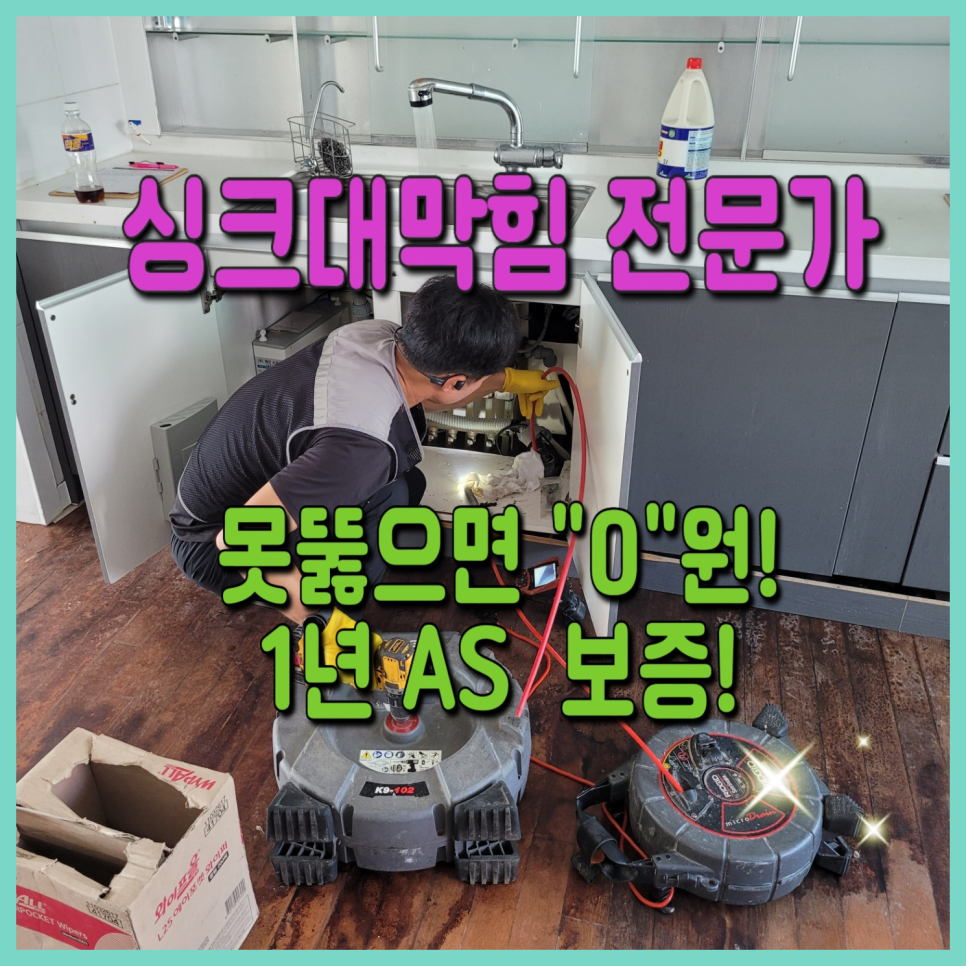
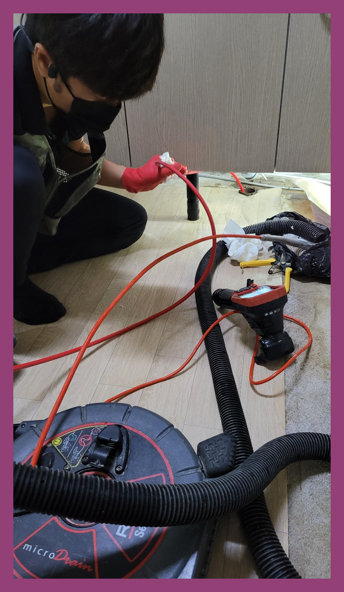
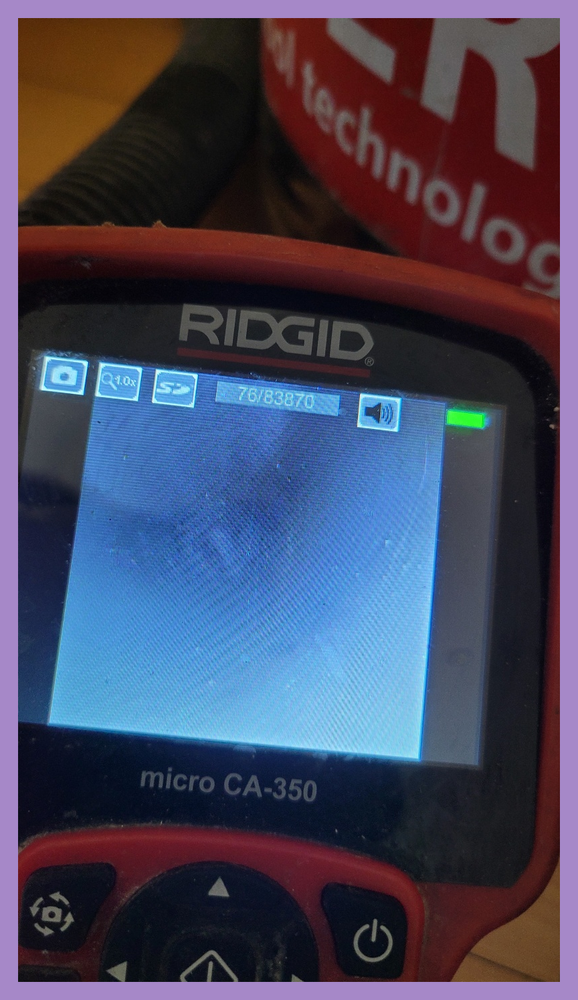
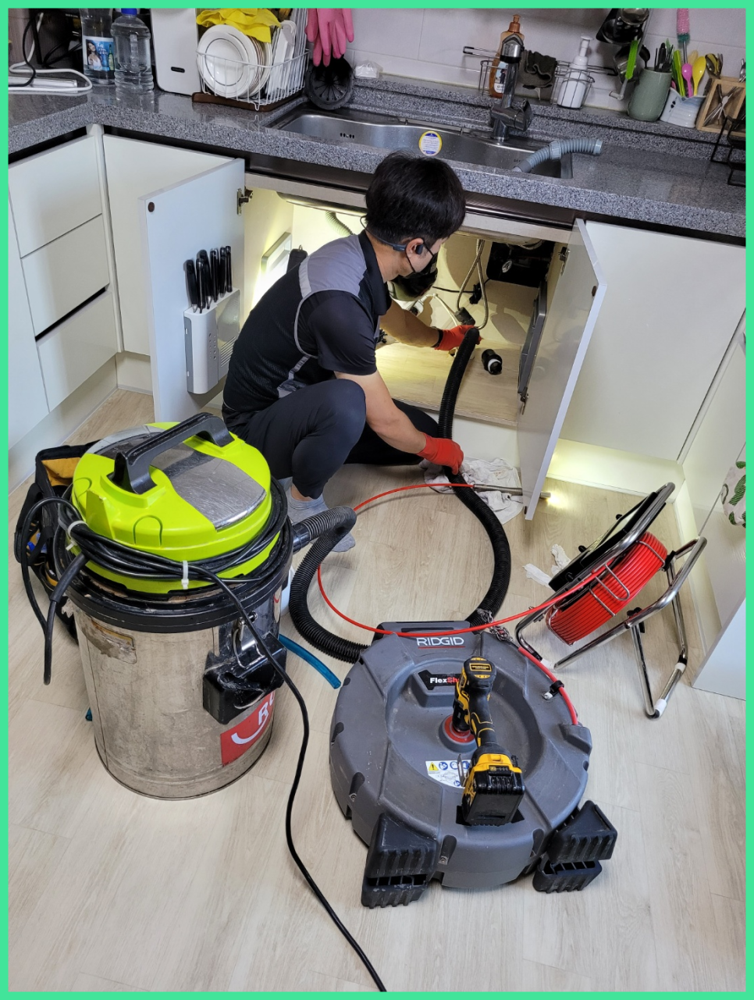
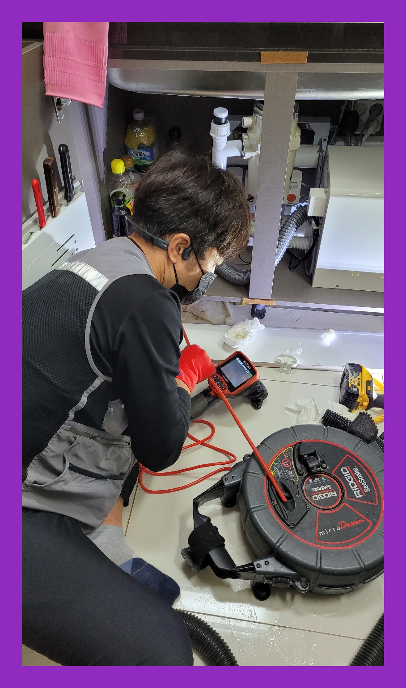
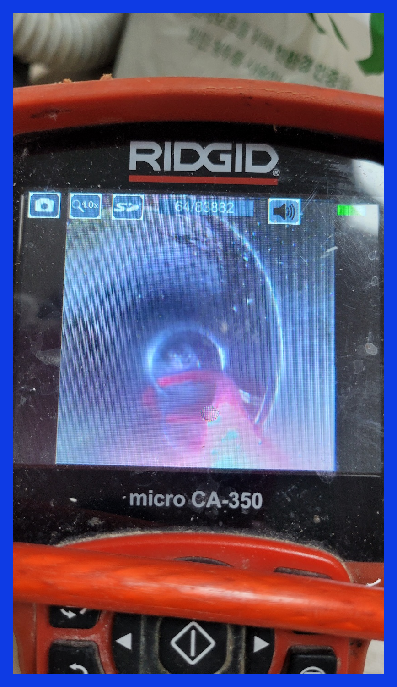
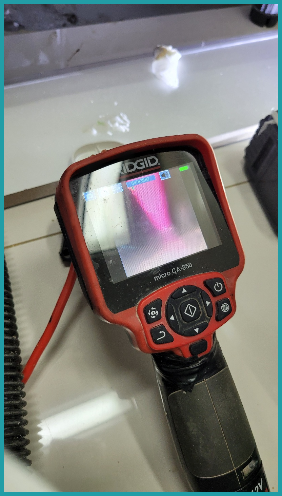

🏠 용인 기흥구 싱크대하수구뚫는업체 보라동 공세동 배관설비
용인 기흥 싱크대막힘 전문 시공 후기

📋 작업 개요
- 위치: 용인 기흥, 기흥, 용인
- 서비스 유형: 싱크대막힘, 하수구막힘, 배관막힘, 뚫는업체, 배관청소
- 작업 일시: 2023. 9. 6. 22:28
- 업체명: 하수구수사대 (010-5615-2118)
🔍 문제 상황
물을 사용하는 장소라면 하수구가 설치되어 있는 모습을 확인할수 있을 것입니다. 하수구는 사용한 물이 흘러나가는 공간으로 다양한 배관으로 연결됩니다.
저희는 하수구나 배관에서 문제가 발생되었을 때 신속하게 현장으로 출동해 명확한 원인을 파악하여 꼼꼼하고 세심하게 작업을 해결해 나갑니다.
용인 기흥구 싱크대하수구뚫는업체 보라동 공세동 배관설비
부족한 장비로 무턱대고 작업을 시작하면 분쇄물들이 배관 속에 남아 재발의 주요 원인이 되어 버립니다. 뚫음 작업을 했는데도 불구하고 재발한 상황이라면 맡긴 업체가 뚫는 장비를 준비해 놨는지 알아보는것도 좋습니다.
전문가에게 도움을 받으려 해도 얼마가 들지 모르기 때문에 고민이 되는 게 당연하시겠지만 시간이 흘러갈수록 비용도 늘어나기 때문에 증상이 발견되었을 때 당장 고칠 생각이 없더라도 얼마나 심각한 것인지 견적 정도는 받아보시는 것을 추천드립니다.

🔎 원인 분석
💡 전문가 진단: 용인 기흥구 싱크대하수구뚫는업체 보라동 공세동 배관설비
대다수분들이 배관이 막힘이 발생되면 그냥 혼자 하다가 처리를 하지못하고 저희 업체를 찾게됩니다. 업체 선정을 잘해야 고객님의 피해를 줄일 수가 있습니다. 하수구전문 장비를 보유하고 있는지 배관 구조를 확실하게 파악할줄 알아야 합니다.
하수구막힘은 얼마나 비용이 들어갈지 모르기 때문에 고민되는 것은 당연합니다만, 시간이 흐를수록 들어가는 비용도 늘어나기 때문에 증상이 발견됐을 때 당장 고칠 생각이 없더라도 얼마나 심각한 것인지 견적 정도는 받아보시고 고려해 보시는 것이 좋습니다.
무심하게 골랐다가 물이 흐르지 않아 전화 걸어보면 돈을 다시 내야 하는 경우들도 빈번하죠. 모르는 일 취급하는 건데 잘못 사용한 바가 없는데도 불구하고 며칠 안에 재발하게 되는 것은 업체의 과실이랍니다.
하수구막힘이 발생하였다고 해서 무조건 셀프로 뚫어보시거나 단순하게 스프링 기기를 이용하는 방법은 정확한 문제를 해결하는 방법이 아닙니다. 현장의 문제를 정확히 파악한 후 적절한 방법을 통해서 해결해야만 비로소 모든 문제의 원인을 해결할 수 있습니다.
이러한 것들로 인하여 물이 내려가는 속도가 더뎌지고 결국 막혀버리는 상황까지 이르게 됩니다. 더 이상은 하수구막힘 걱정없이 안심하고 싱크대를 이용하실 수 있습니다.

🔧 작업 과정
첫 번째로 배관 내시경을 진행하였는데요, 내부 상태를 확인해야 하기 때문입니다. 외관상 확인할 수 없으므로 내시경을 이용해서 확인해 주었습니다. 하수구 막힘의 원인으로는 배수구로 내려보내는 이물질인 경우가 많습니다.
이럴 때 주로 사용하는 것이 바로 플렉스 샤프트입니다. 이 방식은 이물질을 흡입하는 게 아닌 장비 끝에 달린 체인 노즐을 사용해 분쇄해 제거하는 것이죠.
처리하지못한것에 관련해서는 금액을요구하는일은 있을수가없어요.방문한게다인데도 결제해야될때면 금액이배로들어서 고객분들만 기분이나빠지시는데요
대부분은 심하게막힌것이 아니면 기본금액으로 수리할수있지만 낙후된하수도이거나 엄청나게깊숙한곳까지 찌꺼기가쌓여있다면 상황이복잡해지기때문에 추가금액이 발생됩니다
저희설비회사는 정직한것을 고집하고있으며 안좋은곳과 다르게 해결책을알려 드리고있어서 만족하실겁니다.위급하셔도 노하우가있으신분들이 고쳐드리고있어서 걱정되는생각은 덜어놓으셔도됩니다.
저희는 내시경카메라라는 장비로 하수구 깊게 들어가 자리를 잡고 관로탐지기를 사용해 바깥에서도 땅속에 숨은 배관을 찾아내 이물질을 제거해 드리고 있어요
어느 정도 기계를 작동시킨 뒤 배관 안쪽을 다시 카메라를 넣어 확인하였고, 앞전과는 다르게 깨끗하게 청소된 배관 모습을 눈으로 확인할 수 있었습니다.
모든 과정은 고객님께 상세히 작업과정을 설명해 드리고 있으니 걱정하지 않으셔도 됩니다. 배관 속 굳어있는 이물질 제거를 위해 샤프트 장비를 투입하여 딱딱한 것들을 분쇄했습니다.


✅ 작업 완료
배관을 막히게 한 이물질은 앞선 현장의 석회처럼 제거하기 어려운 종류는 아니었습니다. 화장실에서는 샤워할 때 우리 몸에서 나오는 유분기도 시간이 지나면서 찌꺼기화되는데요, 그러면서 굳기 때문에 그런 부분과 머리카락이 뭉치로 들어가 있었습니다.
공휴일에 막히기라도 하면 대다수의 분들이 발등에 불이 떨어져 하수관 안에 이상한 물건들을 넣고 휘젓는다거나 빠뜨려 버리시는 등의 예측 불가능한 행동으로 상황을 더욱 악화시켜 버리는 경우가 많습니다.
그리고 전문 장비로 꼼꼼하게 진단해서 원인을 찾고, 적절한 해결 방법을 찾아 문제를 해결해 드립니다. 주저 말고 필요할 땐 문의하세요.




⚠️ 주방 싱크대 배관 막힘 예방 수칙
- ✅ 기름기가 묻은 식기나 프라이팬은 설거지 전 키친타올로 반드시 기름때를 닦아내세요.
- ✅ 주기적으로 싱크대 개수대에 뜨거운 물을 가득 받아 한 번에 내려 배관 내부 기름을 씻어내세요.
- ✅ 배수구 거름망을 미세한 필터로 사용하시고 음식물 찌꺼기가 틈으로 새어 들지 않게 관리하세요.
- ✅ 베이킹소다와 식초를 뜨거운 물과 함께 일주일에 한 번씩 부어주면 배관 살균과 막힘 예방에 좋습니다.
💡 핵심 정리
- 확실한 장비 작업(내시경 점검 및 샤프트 스케일링)으로 원인을 뿌리 뽑습니다.
- 작업 후 1년 이내에 동일한 부위 재발 시 100% 무상 A/S 서비스를 보장합니다.
- 서울 · 경기 · 인천 전 지역에 24시간 언제든 긴급 출동할 수 있도록 항시 대기 중입니다.
❓ 자주 묻는 질문 (FAQ)
🚨 용인 기흥 싱크대막힘 문제로 고민이신가요?
정확한 원인 진단과 확실한 시공으로 재발 없는 해결을 약속드립니다.
24시간 긴급 출동 | 서울 · 경기 · 인천 전지역 | 1년 내 재발 시 무상 A/S